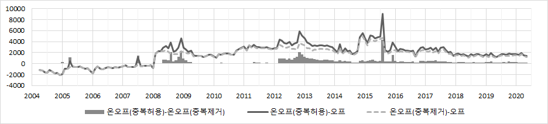

신문기사로 만드는 불확실성 지수
: Bigkinds 온라인 신문기사 데이터 활용
황성윤, 정태훈
경제학과 BK21 하계 경제학 방법론 세미나
2022년 08월 26일
소개
순서
- 경제정책 불확실성 지수 (Economic Policy Uncertainty Index)
- 연구개요
- Baker et al. (2016) 방식의 EPU 지수 검증
- Arbatli et al. (2017) 방식의 EPU 지수 검증
- EPU 지수와 다른 변수와의 관계
- 결론
1. 경제정책 불확실성 지수 (Ecnomic Policy Uncertainty Index, EPU)
Baker, Bloom, Davis(2016), Measuring Economic Policy Uncertainty, QJE, 131(4).
- 경제정책 불확실성 지수 (Ecnomic Policy Uncertainty Index, EPU)
1. 경제정책 불확실성 지수 (Ecnomic Policy Uncertainty Index, EPU)
- Baker et al. (2016) : policyuncertainty.com
- 미국을 포함한 12개국을 대상으로 경제정책이 어느 정도로 불확실한지 정량화하기 위해 만든 지수
- 각국의 EPU는 일간지에서 정책에 관한 불확실성을 언급한 기사의 수로 측정한다.
| 신문일간지 | 가계, 기업 | 거시경제 | ||
|---|---|---|---|---|
| [정부 정책 불확실성을 언급] | => | [정부 정책의 불확실성을 인식] | => | [경제주체 행동에 영향] |
- 신문 일간지들의 경제정책 불확실성 기사
- 경제(Economy), 정책(Policy), 불확실성(Uncertainty) 관련 단어를 적어도 하나씩 가지고 있는 기사
- 경제정책 불확실성 지수 (Ecnomic Policy Uncertainty Index, EPU)
1. 경제정책 불확실성 지수 (Ecnomic Policy Uncertainty Index, EPU)
- 미국의 경제정책 불확실성 지수를 구성하는 키워드 (Baker et al., 2016)
– [U]ncertainty
uncertanty, uncertain
– [E]conomy
economic, economy
– [P]olicy
Congress, deficit, Fedral Reserve, legislation, regulation, White House
- 경제정책 불확실성 지수 (Ecnomic Policy Uncertainty Index, EPU)
1. 경제정책 불확실성 지수 (Ecnomic Policy Uncertainty Index, EPU)
출처 : https://www.policyuncertainty.com/
- 경제정책 불확실성 지수 (Ecnomic Policy Uncertainty Index, EPU)
1. 경제정책 불확실성 지수 (Ecnomic Policy Uncertainty Index, EPU)
- 한국의 EPU 지수를 구성하는 키워드 (Baker et al. (2016) Appendix)
- 경제정책 불확실성 지수 (Ecnomic Policy Uncertainty Index, EPU)
1. 경제정책 불확실성 지수 (Ecnomic Policy Uncertainty Index, EPU)
- 한국의 EPU 지수를 구성하는 키워드 (Baker et al. (2016) Appendix)
– [U]ncertainty
uncertanty, uncertain
– [E]conomy
economic, economy, commerce
– [P]olicy
government, “Bule House”,
congress, authorities, legislation,
tax, regulation, “Bank of Korea”,
“central bank”, defict, WTO,
law/bill, “ministry of finance”
불확실성, 불확실
경제, 경제의, 상업, 무역
정부, 청와대,
국회, 당국, 제정, 제정법, 입법,
세금, 세, 규제, 통제, 규정, 한국은행, 한은,
중앙은행, 적자, 부족, WTO, 세계무역기구
법, 법안, 기획재정부, 기재부
- 경제정책 불확실성 지수 (Ecnomic Policy Uncertainty Index, EPU)
1. 경제정책 불확실성 지수 (Ecnomic Policy Uncertainty Index, EPU)
출처 : https://www.policyuncertainty.com/
- 경제정책 불확실성 지수 (Ecnomic Policy Uncertainty Index, EPU)
2. 연구개요
- 연구의 목적
- Baker et al. (2016)이 제시한 한국의 EPU 지수는 믿을만한가?
- 더 나은 한국 EPU 지수를 도출할 수 있을까?
- Baker et al. (2016)이 제시한 한국의 EPU 지수는 믿을만한가?
- 연구개요
2. 연구개요
- 한국 EPU 지수에 대한 의문점
- [질문 1] 한국 EPU 지수를 구성하는 데이터에는 발행부수 상위 3개 신문사가 포함되지 않음
=> 신문사를 추가하면 다른 형태의 EPU 지수가 만들어지지 않을까? - [질문 2] 한국 EPU 지수를 구성하는 데이터에는 인터넷 기사가 포함되어 있음
=> 순수한 종이지면 기사를 사용하면 다른 형태의 EPU 지수가 만들어지지 않을까? - [질문 3] 한국 EPU 지수를 구성하는 키워드 중에는 한개의 글자로 이루어진 단어가 있음
=> ‘세’, ’법’과 같은 키워드가 EPU 지수 형태에 영향을 주지 않을까?
=> Baker et al.(2016) 방식으로 한국 EPU 지수를 작성하고, 이를 비교해보자
- [질문 4] 한국 EPU 지수를 구성하는 키워드는 영어를 기준으로 번역하였음
=> 정제된 EPU 지수 키워드를 사용하면 EPU 지수 형태에 영향을 주지 않을까? - [질문 5] 한국 EPU 지수로 거시경제 변수의 움직임을 연구한 문헌이 없음
=> Baker et al. (2016), Arbatli et al. (2017) 키워드 EPU와 다른 경제변수 비교
=> Arbatli et al. (2017) 방식으로 한국 EPU지수를 작성하고, 이를 비교해보자.
- [질문 1] 한국 EPU 지수를 구성하는 데이터에는 발행부수 상위 3개 신문사가 포함되지 않음
- 연구개요
2. 연구개요
- 온라인 신문기사 데이터 : Bigkinds
- 연구개요
2. 연구개요
- 오프라인 신문기사 데이터 : Scrapmaster
- 연구개요
3. Baker et al. (2016) 방식의 EPU 지수 검증
- Baker et al. (2016)이 사용한 신문기사 데이터
Bigkinds (bigkinds.or.kr)
동아일보, 경향신문, 매일경제, 한겨레, 한국일보, 한국경제
- 본 연구에서 사용한 신문기사 데이터
Bigkinds (bigkinds.or.kr)
한겨레(1990. 1 - ), 경향신문(1990. 1 - ), 매일경제(1995. 1 - )
Scrapmaster (scrapmaster.co.kr)
한겨레, 경향신문, 매일경제, 조선일보, 중앙일보, 동아일보 (2004. 4 - )
- Baker et al. (2016) 방식의 EPU 지수 검증
3. Baker et al. (2016) 방식의 EPU 지수 검증
EPU 지수 산정방법
- [1단계] 각 신문사별로 월별 총 기사 개수 합계, EPU 키워드에 해당하는 기사 개수를 집계
- [2단계] 각 신문사별로 월별 전체 기사 수에서 EPU 키워드 기사 수가 차지하는 비율 계산
- [3단계] [2단계]의 월별 비율의 표준편차를 계산 (단, 표준편차를 계산하는 기간은 T_1으로 정의)
- [4단계] [2단계]의 월별 비율을 [3단계]의 표준편차로 나누어줌 => X_it
- [5단계] [4단계]의 신문사별 값을 월별로 평균하여 하나의 시계열로 계산 => Z_t
- [6단계] [5단계]의 시계열에서 평균을 계산 (단, 평균을 계싼하는 기간은 T_2로 정의)
- [7단계] [5단계]의 시계열 값을 [6단계]의 평균으로 나누고 100을 곱함 => EPU_t 수치 산정
- [1단계] 각 신문사별로 월별 총 기사 개수 합계, EPU 키워드에 해당하는 기사 개수를 집계
- Baker et al. (2016) 방식의 EPU 지수 검증
3. Baker et al. (2016) 방식의 EPU 지수 검증
- Baker et al. (2016)에서 제시하는 한국의 EPU 지수를 재현할 수 있는지 확인
=> Baker et al. (2016)과 같은 방법으로, 빅카인즈의 경향신문, 한겨레, 매일경제로 EPU 구성
Baker et al. (2016)의 한국 EPU 지수와 비교 (상관계수 : 0.931)
- Baker et al. (2016) 방식의 EPU 지수 검증
3. Baker et al. (2016) 방식의 EPU 지수 검증
- 한 글자 키워드 ‘세’, ‘법’ 제외 && 지역, 문화, 스포츠 섹션 기사 제외
Baker et al. (2016)의 한국 EPU 지수와 비교 (상관계수 : 0.944)
- Baker et al. (2016) 방식의 EPU 지수 검증
3. Baker et al. (2016) 방식의 EPU 지수 검증
- 오프라인 신문기사, 온라인 + 오프라인 신문기사로 EPU 지수를 만들었을 때 차이를 확인
=> 오프라인은 Scrapmaster, 온라인 + 오프라인은 Bigkinds 데이터로 구성
오프라인, 온라인 + 오프라인 EPU 지수 비교 (상관계수 : 0.929)
- Baker et al. (2016) 방식의 EPU 지수 검증
3. Baker et al. (2016) 방식의 EPU 지수 검증
- 오프라인, 온라인 + 오프라인 EPU 지수에 차이 => 온라인에서는 중복기사가 발생하기 때문
- 경향신문
 - 한겨레
- 매일경제
- Baker et al. (2016) 방식의 EPU 지수 검증
3. Baker et al. (2016) 방식의 EPU 지수 검증
- 신문사 수에 따른 EPU 지수 차이
- 오프라인에서 신문사를 늘려 EPU 지수를 작성할 때의 차이를 분석
[경향, 한겨레, 매일경제] vs [경향, 한겨레, 매일경제] + [조선일보, 중앙일보, 동아일보]
- Baker et al. (2016) 방식의 EPU 지수 검증
3. Baker et al. (2016) 방식의 EPU 지수 검증
정리
Baker et al. (2016)과 같은 방식으로 거의 동일한 EPU 지수를 도출할 수 있음
[질문 1] 신문사를 추가하면 다른 형태의 EPU 지수가 만들어지지 않을까?
=> 신문사의 추가나 구성의 차이는 EPU 지수 형태에 큰 영향을 주지 않음[질문 2] 순수한 종이지만 기사를 사용하면 다른 형태의 EPU 지수가 만들어지지 않을까?
=> 온라인과 오프라인 기사 간에 차이가 있지만, 일률적인 주장은 할 수 없음[질문 3] ‘세’, ’법’과 같은 한 글자 키워드가 EPU 지수 형태에 영향을 주지 않을까?
=> 한 글자 단어나 지역, 문화, 스포츠 섹션 제외여부는 EPU 지수 형태에 큰 영향을 주지 않음
- Baker et al. (2016) 방식의 EPU 지수 검증
4. Arbatli et al. (2017) 방식의 EPU 지수 작성
Baker et al. (2016)에 대한 비판 (Arbatli et al., 2017)
- Baker et al. (2016)이 일본 EPU 지수를 만들 때, 영문 키워드를 일본어로 매칭하는 과정에서 일본어 신문을 살펴보는 과정을 거치지 않았음
=> 일본에서 자주 쓰이는 키워드가 누락되었을 가능성
- Baker et al. (2016)이 일본 EPU 지수를 만들 때, 영문 키워드를 일본어로 매칭하는 과정에서 일본어 신문을 살펴보는 과정을 거치지 않았음
Arbatli et al. (2017)의 EPU 지수 키워드를 이용하여 한국 EPU 지수를 작성
- Arbatli et al. (2017) 방식의 EPU 지수 작성
4. Arbatli et al. (2017) 방식의 EPU 지수 작성
- Arbatli et al. (2017)의 일본 EPU 지수 키워드
- Arbatli et al. (2017) 방식의 EPU 지수 작성
4. Arbatli et al. (2017) 방식의 EPU 지수 작성
- Arbatli et al. (2017) 키워드 매칭 예시 (不確実, 일본어 -> 한국어)

- Arbatli et al. (2017) 방식의 EPU 지수 작성
4. Arbatli et al. (2017) 방식의 EPU 지수 작성
- Arbatli et al. (2017)에서 선정한 키워드와 Baker et al. (2016)의 비교
[Arbatli et al. (2017)]
[U]ncertainty
불확실성, 불투명, 불안, 불안감
[E]conomy
경제, 경기
[P]olicy
과세, 세제, 소비세, 규제,
국회, 국회의원, 재정, 나라살림, 세금,
한국은행, 한은, 중앙은행, 법안, 세출,
세입, 세수, 재원, 예산, 국채, 신용등급, 나랏빚,
국가채무, 정부채무, 재정적자, 자유화, 자율화,
구조개혁, 구조조정.
[Baker et al. (2016)]
[U]ncertainty
불확실성, 불확실
[E]conomy
경제, 경제의, 상업, 무역
[P]olicy
정부, 청와대,
국회, 당국, 제정, 제정법, 입법,
세금, 세, 규제, 통제, 규정, 한국은행, 한은,
중앙은행, 적자, 부족, WTO, 세계무역기구,
법, 법안, 기획재정부, 기재부.
- Arbatli et al. (2017) 방식의 EPU 지수 작성
4. Arbatli et al. (2017) 방식의 EPU 지수 작성
- Arbatli et al. (2017) 방식의 EPU 지수와 Baker et al. (2016)의 EPU 지수 비교
=> 전체적으로 유사한 움직임을 보이지만, 지수의 상대적 크기는 다르게 반영
Arbatli et al. (2017) 방식의 EPU 지수와 Baker et al. (2016)의 EPU 지수 비교 (상관계수: 0.657)
- Arbatli et al. (2017) 방식의 EPU 지수 작성
5. EPU 지수와 다른 변수와의 관계
Arbatli et al. (2017) 방식의 EPU 지수와 Baker et al. (2016)의 EPU 지수는 형태에 차이가 있음
=> 둘 중 어떤 것이 더 나은 지수인가?불확실성을 관찰하는 방법 (이헌창 · 전원석, 2016)
- 주가와 환율을 이용하여 금융시장의 불확실성 정도를 파악하는 방법
- 소비자 혹은 생산자의 주관적인 전망을 이용
- 신문에서 언급된 내용을 확인하는 방법
위에서 작성한 EPU 지수를 금융관련변수, 전망관련변수와 비교
=> 불확실성, 혹은 변동성의 상관관계를 파악
- EPU 지수와 다른 변수와의 관계
5. EPU 지수와 다른 변수와의 관계
- EPU 지수와 환율 변동성, 주가 변동성, 경제심리지표와의 상관관계
– 환율변동성 (전일대비 변동폭)
| 원-달러 | 원-엔 | 원-유로 | |
|---|---|---|---|
| BBD_Korea | 0.193 | 0.214 | 0.165 |
| EPU_3 | 0.417 | 0.438 | 0.509 |
– 환율변동성 (전일대비 변동율)
| 원-달러 | 원-엔 | 원-유로 | |
|---|---|---|---|
| BBD_Korea | 0.222 | 0.120 | 0.154 |
| EPU_3 | 0.449 | 0.398 | 0.512 |
– 주가변동성
| V-KOSPI 200 | |
|---|---|
| BBD_Korea | 0.088 |
| EPU_3 | 0.408 |
– 경제심리지수
| BIS 역수 | CCSI 역수 | ESI 역수 | |
|---|---|---|---|
| BBD_Korea | 0.276 | 0.348 | 0.343 |
| EPU_3 | 0.325 | 0.506 | 0.400 |
- EPU 지수와 다른 변수와의 관계
5. EPU 지수와 다른 변수와의 관계
- Var 모형으로 EPU 지수와 다른 거시경제변수의 동학적 영향력 파악
– 다변수 모형의 구성
모형 1 : EPU지수, 주가(코스피 지수의 로그값), 이자율(국고채 3년물), 취업자수 (로그값), 제조업생산지수
– 이변수 모형
모형 1: EPU 지수, 취업자수 (로그값)
모형 2: EPU 지수, 제조업생산지수
- EPU 지수와 다른 변수와의 관계
5. EPU 지수와 다른 변수와의 관계
- 다변수 VAR모형, 충격반응함수 비교
– ln(취업자수), (좌측은 Baker et al. 방식, 우측은 Arbatli et al. 방식)
– 제조업 생산지수, (좌측은 Baker et al. 방식, 우측은 Arbatli et al. 방식)
- EPU 지수와 다른 변수와의 관계
5. EPU 지수와 다른 변수와의 관계
- 이변수 VAR모형, 충격반응함수 비교
– ln(취업자수), (좌측은 Baker et al. 방식, 우측은 Arbatli et al. 방식)
– 제조업 생산지수, (좌측은 Baker et al. 방식, 우측은 Arbatli et al. 방식)
- EPU 지수와 다른 변수와의 관계
5. EPU 지수와 다른 변수와의 관계
정리
[질문 4] 정제된 EPU 지수 키워드를 사용하면 EPU 지수 형태에 영향을 주지 않을까?
=> Arbatli et al. (2017)의 키워드로 EPU 지수를 구성할 경우 Baker et al. (2016)의 EPU 지수와 차이가 있음을 확인[질문 5] 한국 EPU 지수로 거시경제 변수의 움직임을 파악할 수 있을까?
=> Arbatli et al. (2017)의 키워드로 작성한 EPU 지수가 불확실성을 더 잘 보여주고 있다.
- EPU 지수와 다른 변수와의 관계
6. 결론
EPU 지수 작성에 신문사 구성이 달라진다고 해서 지수값 자체의 큰 변화는 없다.
온라인 신문기사의 중복이 EPU 지수에 미치는 영향은 일률적으로 주장할 수 없다.
Baker et al. (2016)의 EPU 지수는 Arbatli et al. (2017)의 방식보다 불확실성을 나타내는 다른 지표들과의 상관관계가 낮다.
더 정확한 한국의 EPU 지수를 작성하기 위해서는 좀 더 정제된 용어를 선택해야 한다.
- 결론